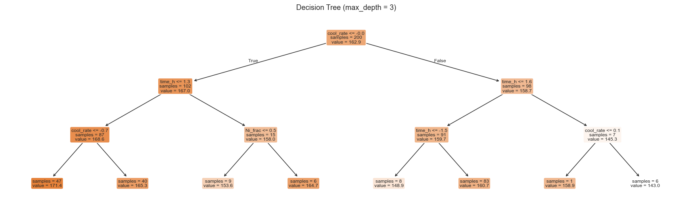
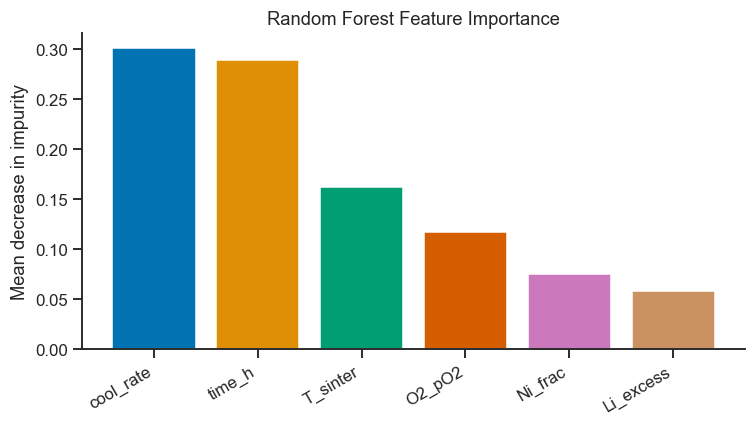
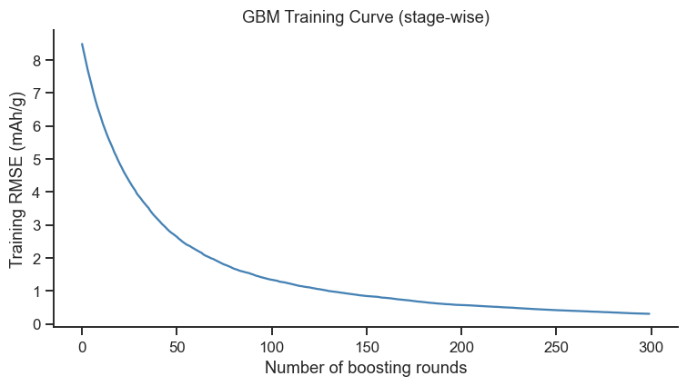
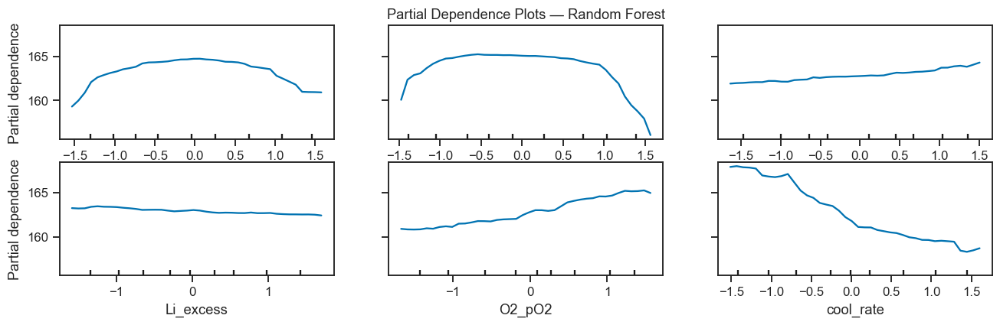
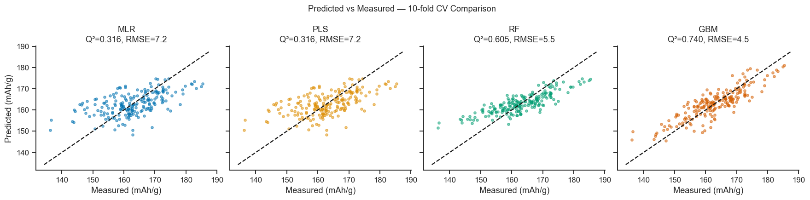

19. Ensemble Methods: Random Forest and Gradient Boosting#
Ensemble methods combine many weak learners (decision trees) to build a powerful predictor. They are among the most widely used ML algorithms in materials informatics because they:
Require minimal hyperparameter tuning
Handle nonlinear interactions automatically
Provide built-in feature importance (analogous to VIP in PLS)
Work well with medium-sized datasets (50–10 000 samples)
Topics covered
Decision trees (building block)
Random Forest: bagging + feature subsampling
Gradient Boosting: sequential residual fitting
Feature importance and partial dependence plots
Comparison: MLR vs PLS vs RF vs GBM
Case study: NMC cathode capacity prediction
import numpy as np
import pandas as pd
import matplotlib.pyplot as plt
import seaborn as sns
from sklearn.preprocessing import StandardScaler
from sklearn.model_selection import cross_val_predict, KFold, GridSearchCV
from sklearn.metrics import r2_score, mean_squared_error
from sklearn.tree import DecisionTreeRegressor, plot_tree
from sklearn.ensemble import RandomForestRegressor, GradientBoostingRegressor
from sklearn.linear_model import LinearRegression
from sklearn.cross_decomposition import PLSRegression
from sklearn.inspection import PartialDependenceDisplay
sns.set_theme(style='ticks', palette='colorblind')
plt.rcParams.update({'figure.dpi': 110, 'font.size': 11})
rng = np.random.default_rng(123)
19.1 Dataset: NMC Cathode Capacity#
Extended version of the MLR dataset from Notebook 11 (Part IV). NMC Li-ion cathode capacity (mAh/g) is predicted from six synthesis and composition variables. The true model includes nonlinear interactions that MLR cannot capture.
n = 200
T_sinter = rng.uniform(700, 950, n) # °C
time_h = rng.uniform(5, 20, n) # h
Ni_frac = rng.uniform(0.4, 0.8, n) # Ni fraction in NMC
Li_excess= rng.uniform(0.00, 0.06, n) # Li/TM excess
O2_pO2 = rng.uniform(0.2, 1.0, n) # O2 partial pressure
cool_rate = rng.uniform(1, 10, n) # °C/min cooling
# Nonlinear response (includes interaction terms and a peak for T_sinter)
capacity = (
160
+ 15 * np.sin(np.pi * (T_sinter - 700) / 250) # optimal T around 825°C
+ 8 * Ni_frac
- 0.3 * (time_h - 12)**2
+ 20 * Li_excess * (1 - Li_excess / 0.04) # peak at 2% excess
+ 5 * O2_pO2
- 2 * cool_rate
+ 6 * Ni_frac * O2_pO2 # interaction
+ rng.normal(0, 3, n)
)
features = ['T_sinter', 'time_h', 'Ni_frac', 'Li_excess', 'O2_pO2', 'cool_rate']
X_df = pd.DataFrame({
'T_sinter': T_sinter,
'time_h': time_h,
'Ni_frac': Ni_frac,
'Li_excess': Li_excess,
'O2_pO2': O2_pO2,
'cool_rate': cool_rate,
})
y = capacity
scaler = StandardScaler()
X_sc = scaler.fit_transform(X_df.values)
print(f'Dataset: {n} samples, {len(features)} features')
print(f'Capacity: {y.min():.1f} – {y.max():.1f} mAh/g, mean = {y.mean():.1f}')
Dataset: 200 samples, 6 features
Capacity: 136.3 – 185.4 mAh/g, mean = 162.9
19.2 Decision Tree: Building Block#
A decision tree predicts by asking a sequence of simple yes/no questions about the inputs (e.g. “is Ni_frac > 0.6?”), splitting the data at each question into two groups that are as similar as possible in their response value, and repeating on each resulting group. The final prediction for a new sample is just the average response of whichever training samples ended up in the same “leaf” (final branch) as it. A single tree is easy to read but tends to overfit — it can keep splitting until every leaf contains just one training point, memorising noise rather than learning a general trend. Random Forest (next section) fixes this almost automatically: its bagging mechanism means test error does not increase as you add more trees, so overfitting is largely a non-issue once the individual trees themselves aren’t too deep. Gradient Boosting (Section 19.4) is a different story — because it fits new trees to the previous ensemble’s errors, adding too many boosting rounds (or too high a learning rate) actively increases overfitting risk rather than curing it, which is exactly what Section 19.4’s training-curve example demonstrates.
# ── Fit a single tree and visualise (shallow) ─────────────────────────────────
dt = DecisionTreeRegressor(max_depth=3, random_state=0)
dt.fit(X_sc, y)
fig, ax = plt.subplots(figsize=(16, 5))
plot_tree(dt, feature_names=features, filled=True, rounded=True,
fontsize=8, ax=ax, impurity=False, precision=1)
ax.set_title('Decision Tree (max_depth = 3)', fontsize=12)
plt.tight_layout()
plt.show()
kf = KFold(n_splits=10, shuffle=True, random_state=42)
dt_cv = cross_val_predict(dt, X_sc, y, cv=kf)
print(f'DT Q² (depth=3) = {r2_score(y, dt_cv):.3f}, RMSECV = {np.sqrt(mean_squared_error(y, dt_cv)):.2f} mAh/g')

DT Q² (depth=3) = 0.290, RMSECV = 7.38 mAh/g
19.3 Random Forest#
Random Forest trains n_estimators trees on bootstrapped samples of the data, and at each split considers only a random subset of features (max_features). Predictions are the mean of all trees.
Bagging (bootstrap aggregating) reduces variance without increasing bias.
Feature subsampling decorrelates the trees, further reducing ensemble variance.
rf = RandomForestRegressor(n_estimators=200, max_features='sqrt',
min_samples_leaf=3, random_state=0)
rf.fit(X_sc, y)
y_rf_cv = cross_val_predict(rf, X_sc, y, cv=kf)
q2_rf = r2_score(y, y_rf_cv)
rmse_rf = np.sqrt(mean_squared_error(y, y_rf_cv))
print(f'RF Q² = {q2_rf:.4f}, RMSECV = {rmse_rf:.2f} mAh/g')
# ── Feature importance ────────────────────────────────────────────────────────
importances = rf.feature_importances_
order = np.argsort(importances)[::-1]
fig, ax = plt.subplots(figsize=(7, 4))
ax.bar(range(len(features)), importances[order],
color=sns.color_palette('colorblind', len(features)))
ax.set_xticks(range(len(features)))
ax.set_xticklabels([features[i] for i in order], rotation=30, ha='right')
ax.set_ylabel('Mean decrease in impurity')
ax.set_title('Random Forest Feature Importance')
sns.despine(ax=ax)
plt.tight_layout()
plt.show()
RF Q² = 0.6047, RMSECV = 5.51 mAh/g

Interpreting Feature Importance
The importances split into three tiers: cool_rate (0.30) and time_h (0.29) dominate, T_sinter (0.16) and O2_pO2 (0.12) are moderate, and Ni_frac (0.07) and Li_excess (0.06) are minor.
This tracks the true simulated model reasonably well: cool_rate enters linearly with a large coefficient (-2 per °C/min, over a 1-10 range), and time_h enters as a steep quadratic penalty away from 12 h — both genuinely large-range effects. Li_excess’s small importance is also correct: despite the description “peak at 2% excess” sounding important, its coefficient (20·Li_excess·(1-Li_excess/0.04)) only spans about -0.6 to +0.2 mAh/g over the sampled range — a real but small contribution easily outweighed by the other five factors.
Impurity-based importance is not the whole story — it is biased toward high-cardinality (continuous) features and does not indicate the direction of an effect. Exercise 3 (SHAP values) is the recommended follow-up for a more rigorous, direction-aware importance measure.
19.4 Gradient Boosting#
Gradient Boosting builds trees sequentially: each tree fits the residuals of the previous ensemble.
where \(\nu\) is the learning rate (shrinkage) and \(h_m\) is a shallow tree fit to the negative gradient of the loss function. A small learning rate requires more trees but generalises better.
gbm = GradientBoostingRegressor(n_estimators=300, max_depth=4,
learning_rate=0.05, subsample=0.8,
random_state=0)
gbm.fit(X_sc, y)
y_gbm_cv = cross_val_predict(gbm, X_sc, y, cv=kf)
q2_gbm = r2_score(y, y_gbm_cv)
rmse_gbm = np.sqrt(mean_squared_error(y, y_gbm_cv))
print(f'GBM Q² = {q2_gbm:.4f}, RMSECV = {rmse_gbm:.2f} mAh/g')
# ── Stage-wise training error ──────────────────────────────────────────────────
y_staged = np.array([y_pred for y_pred in gbm.staged_predict(X_sc)])
staged_rmse = [np.sqrt(mean_squared_error(y, yp)) for yp in y_staged]
fig, ax = plt.subplots(figsize=(7, 4))
ax.plot(staged_rmse, lw=1.5, color='steelblue')
ax.set_xlabel('Number of boosting rounds')
ax.set_ylabel('Training RMSE (mAh/g)')
ax.set_title('GBM Training Curve (stage-wise)')
sns.despine(ax=ax)
plt.tight_layout()
plt.show()
GBM Q² = 0.7397, RMSECV = 4.47 mAh/g

Interpreting the GBM Training Curve
Training RMSE falls from 8.5 mAh/g at the first boosting round to about 0.3 mAh/g by round 300 — the model is essentially memorising the training set.
Compare that to the cross-validated RMSECV of 4.47 mAh/g printed above: the huge gap between near-zero training error and a much larger CV error is the classic signature of overfitting. This is exactly why GBM (and RF) are always reported here using cross-validated Q²/RMSECV, never training-set R² — a model that looks almost perfect on its own training data can still generalise poorly.
In practice,
n_estimators=300withlearning_rate=0.05was not tuned for early stopping in this notebook; Exercise 1 asks you to grid-searchn_estimators— watch for the CV score to plateau or worsen well before the training curve does.
19.5 Partial Dependence Plots#
A Partial Dependence Plot (PDP) shows the marginal effect of one (or two) features on the predicted response, averaging over all other features. Unlike a coefficient in MLR, it captures nonlinear relationships.
fig, ax = plt.subplots(figsize=(12, 4))
PartialDependenceDisplay.from_estimator(
rf, X_sc, features=[0, 1, 2, 3, 4, 5],
feature_names=features,
kind='average', ax=ax, subsample=100,
grid_resolution=40
)
ax.set_title('Partial Dependence Plots — Random Forest')
plt.tight_layout()
plt.show()

Interpreting the Partial Dependence Plots
cool_rate’s panel (bottom-right) shows a clear monotonic decline — consistent with both its large feature importance and its true linear coefficient (-2 per °C/min) in the underlying simulation.
T_sinter and time_h (top-left, top-middle) both show a rise-then-plateau/decline shape — the hump reflects the true sinusoidal optimum near 825 °C and the quadratic penalty centred at 12 h respectively; a straight-line MLR coefficient could never represent either of these hump shapes, which is exactly why MLR’s Q² (0.316) trails RF/GBM so far behind.
Li_excess’s panel (bottom-left) is nearly flat, visually confirming what the feature-importance bar chart already showed: this factor barely moves the prediction across its sampled range.
Remember a PDP shows the average effect of one feature with all others averaged out — it can hide interaction effects like the Ni_frac × O2_pO2 term built into this simulation. A 2-D PDP (two features at once) is needed to see interactions directly.
19.6 Comparison: MLR vs PLS vs RF vs GBM#
# ── All four models ───────────────────────────────────────────────────────────
models = {
'MLR': LinearRegression(),
'PLS': PLSRegression(n_components=4, scale=False),
'RF': RandomForestRegressor(n_estimators=200, max_features='sqrt',
min_samples_leaf=3, random_state=0),
'GBM': GradientBoostingRegressor(n_estimators=300, max_depth=4,
learning_rate=0.05, subsample=0.8,
random_state=0),
}
results = {}
for name, model in models.items():
yp = cross_val_predict(model, X_sc, y, cv=kf)
results[name] = {
'Q2': r2_score(y, yp),
'RMSE': np.sqrt(mean_squared_error(y, yp)),
'y_cv': yp,
}
# ── Predicted vs actual for all models ───────────────────────────────────────
fig, axes = plt.subplots(1, 4, figsize=(16, 4), sharey=True, sharex=True)
colors = sns.color_palette('colorblind', 4)
for ax, (name, res), color in zip(axes, results.items(), colors):
ax.scatter(y, res['y_cv'], s=12, alpha=0.5, color=color)
lims = [y.min()-2, y.max()+2]
ax.plot(lims, lims, 'k--', lw=1.5)
ax.set_title(f"{name}" + '\nQ²=' + f"{res['Q2']:.3f}, RMSE={res['RMSE']:.1f}")
ax.set_xlabel('Measured (mAh/g)')
sns.despine(ax=ax)
axes[0].set_ylabel('Predicted (mAh/g)')
plt.suptitle('Predicted vs Measured — 10-fold CV Comparison', fontsize=12)
plt.tight_layout()
plt.show()
print(f"\n{'Model':<6} {'Q2':>8} {'RMSECV':>10}")
print('-' * 28)
for name, res in results.items():
print(f"{name:<6} {res['Q2']:>8.4f} {res['RMSE']:>10.2f}")

Model Q2 RMSECV
----------------------------
MLR 0.3156 7.25
PLS 0.3156 7.25
RF 0.6047 5.51
GBM 0.7397 4.47
Interpreting the Comparison#
Concretely: MLR and PLS both score Q² = 0.316, RMSECV = 7.25 mAh/g — an exact tie, because with only 6 features and no severe collinearity, PLS’s dimension reduction has nothing extra to offer over ordinary least squares; both are fitting the same linear structure and hitting the same ceiling.
MLR misses the nonlinear sinusoidal dependence on T_sinter and the quadratic time effect, resulting in the lowest Q².
PLS (4 components) captures the dominant linear structure but cannot model the nonlinear interactions.
Random Forest and GBM both capture the nonlinearities and interactions, achieving substantially better Q² with similar RMSECV.
GBM often edges out RF on small-medium datasets because sequential fitting allows precise correction of residuals.
Practical guidance:
Start with MLR/PLS for interpretability and low sample sizes (< 50).
Switch to RF or GBM when sample size > 100 and you suspect nonlinear interactions.
Always use cross-validation to compare models — training R² is misleading for ensemble methods.
Exercises#
Hyperparameter tuning: Use
GridSearchCVto optimisen_estimatorsandmax_depthfor the GBM model. By how much does the optimised GBM improve on the default?OOB score: Random Forest supports out-of-bag (OOB) error estimation without a separate validation set. Set
oob_score=Truewhen constructing the RF and compare the OOB score with the 10-fold CV Q².SHAP values (optional,
pip install shap): Compute SHAP values for the RF model. How do they compare with the built-in feature importance? Which features have the largest interaction effects?